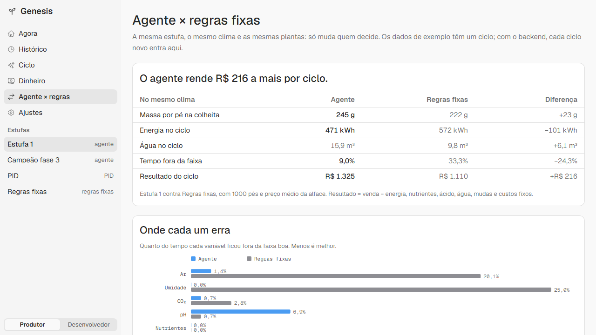
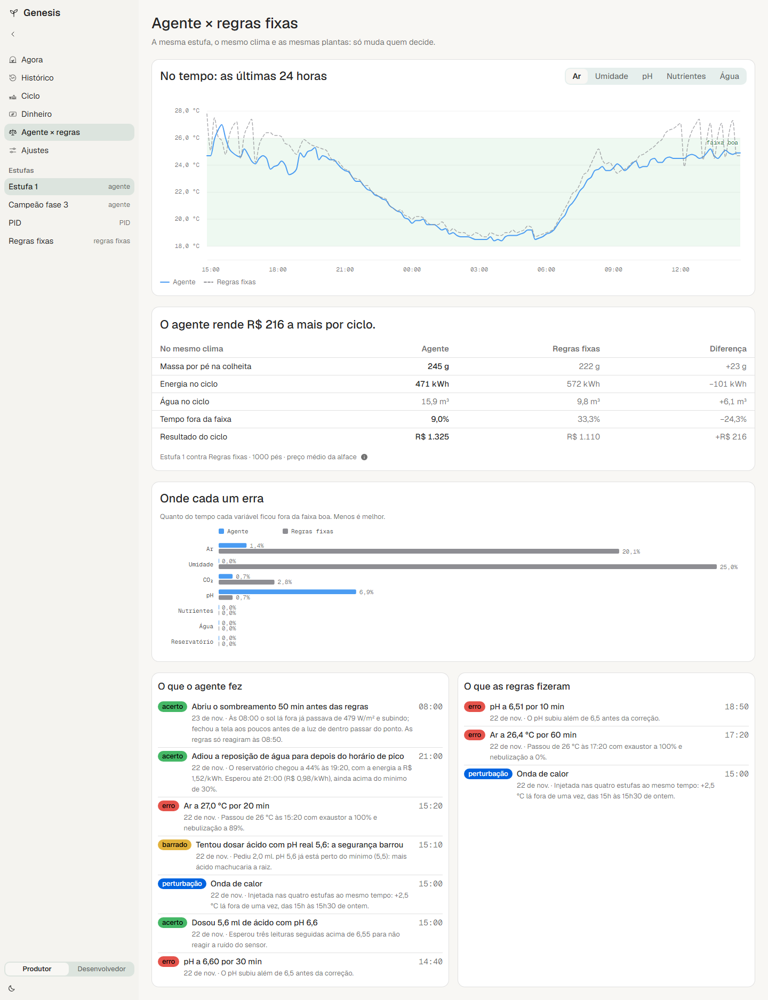
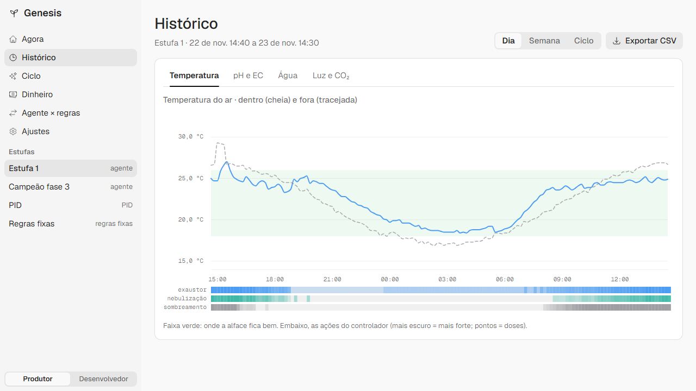
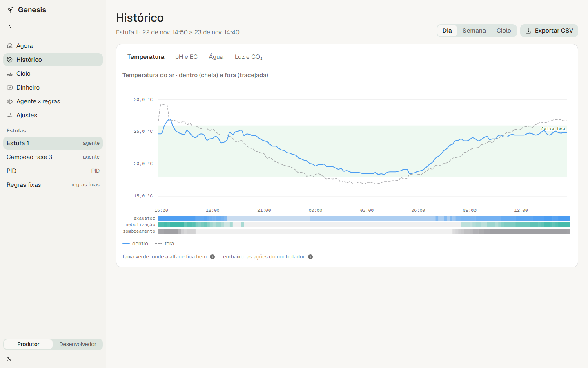
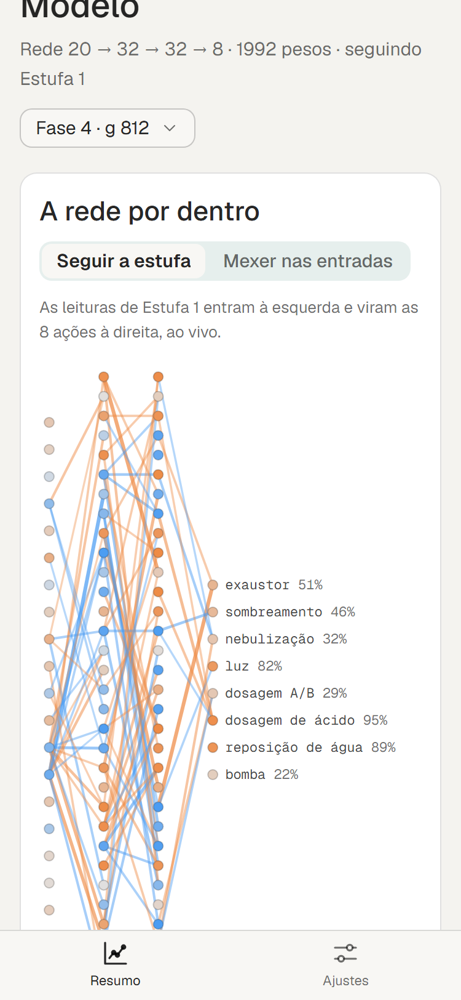

Correções visuais do dashboard (rodada 1)
Sete mudanças pedidas pelo Gabriel: barra lateral que recolhe, tema claro/escuro num clique, o "?" funcionando, menos texto nas páginas, gráficos de linha no centro, um visual próprio (verde-estufa e ícones do Genesis) e uma rede pequena andando junto com cada gravação. Depois, uma revisão visual feita por um subagente e uma segunda rodada de correções.
Antes e depois




Todas as capturas novas (todas as rotas, desktop e celular, claro e escuro, barra aberta e recolhida) estão em docs/revisao-visual/fase-13/.
O que foi feito, item por item
1. Barra lateral que recolhe
O SideNav do Astryx já sabia recolher (collapsible), com o nome de cada ícone num tooltip (o balãozinho que aparece ao passar o mouse) e o aria-label para leitor de tela. Não precisou escrever do zero.
O botão embutido do Astryx fica no rodapé. O pedido era "visível no topo da barra": desliguei o embutido (hasButton: false) e pus o SideNavCollapseButton no topo. A escolha fica salva em usePreferencias.barraRecolhida, junto do modo e do tema.
A lista de estufas, o card "Treino rodando" e o seletor Produtor/Desenvolvedor são largos; numa faixa de ícones só quebrariam o layout. Somem com a barra recolhida e voltam ao abrir. O modo continua em Ajustes. Alternativa descartada: versões em ícone de cada bloco, mais código para pouco ganho.
2. Tema claro/escuro num clique
Um botão sol/lua (molecules/BotaoTema.tsx): no rodapé da barra no desktop (fica à vista mesmo recolhida) e no topo de cada página no celular. Ele lê useTheme().mode, que já resolve "sistema" para claro ou escuro, então com "sistema" o primeiro clique vai para o oposto do que está na tela. "Sistema" continua em Ajustes. A transição suave (trocarComTransicao) saiu de Ajustes para shared/lib e é usada pelos dois.
Alarme falso no caminho: no navegador de testes do Claude o clique parecia não pegar. Medindo, a janela estava em segundo plano e desenhava 1 quadro por segundo; a transição de tema espera um quadro. No Playwright normal (e no navegador de verdade) os quadros correm a 60 por segundo e o clique troca na hora. O teste e2e cobre isso.
3. O "?" funcionando
O defeito exato: a dica abria e fechava certo com mouse, teclado e toque, mas o texto era ilegível: preto sobre fundo preto no tema claro (contraste medido 1,12:1; o mínimo é 4,5:1) e claro sobre claro no escuro.
A causa: o balão do Astryx tem fundo invertido (--color-background-inverted) e já põe a cor de letra certa. O nosso OQueEIsso montava o conteúdo com <Text>, que força a cor de texto da página (feita para fundo claro). A dica do Modelo (Termo) passava texto puro e por isso funcionava.
A correção: uma vez só, no componente compartilhado: color="inherit" nos textos da dica. E o Termo do Modelo deixou de existir: agora há um jeito só de mostrar dica, o OQueEIsso (com um rotulo opcional para as legendas). Os dois textos que só existiam no Modelo foram para o glossário (sinalNeuronio, atribuicaoEntrada).
Teste: dashboard/e2e/dica.spec.ts abre e fecha uma dica com mouse, teclado e toque e mede o contraste da letra contra o balão nos dois temas. Com o código antigo ele falha (1,12:1); com o novo passa.
4. Menos texto nas páginas
Regra: a página mostra dado e gráfico; a explicação mora no "?" e no glossário. No máximo um subtítulo de uma linha por página ou card. Nada didático foi apagado:
| Página | Texto que saiu | Para onde foi |
|---|---|---|
| Agente × regras | "Os dados de exemplo têm um ciclo; com o backend, cada ciclo novo entra aqui." | Saiu (aviso de fonte; o selo "dados de exemplo" já diz isso). Ficou a primeira frase como subtítulo. |
| Agente × regras (tabela) | "Resultado = venda − energia, nutrientes, ácido, água, mudas e custos fixos." | Glossário margem (exemplo), pelo "?" ao lado da linha "Estufa 1 contra Regras fixas · 1000 pés". |
| Agora e Histórico (gráficos 24 h) | "Faixa verde: onde a alface fica bem. Embaixo, as ações do controlador (mais escuro = mais forte; pontos = doses)." | Dois "?": faixaBoa (já existia) e o termo novo faixaAcoes. |
| Dinheiro | O parágrafo "Como a conta é feita" (5 frases). | Termo novo suposicoesConta (hipóteses e fontes de preço). Ficou uma linha com os números do código: peso da cabeça e mínimo para vender. |
| Estufas lado a lado | "Passe o ponteiro (ou arraste o dedo) no gráfico..." (2 linhas) | Encurtado para uma linha. |
| Estufas lado a lado | "Acontece em todas as estufas no mesmo instante e vira um evento. Bom para ver quem aguenta." | "?" do termo perturbacao (já dizia isso) ao lado do título. |
| Gravações | "Ciclos gravados no treino, reproduzidos com as ações que a rede tomou..." | "?" do termo gravacao no título; subtítulo de uma linha. |
| Gravações | "Teclado: espaço toca ou pausa; setas andam uma hora (com Shift, um dia)." | Glossário replay (exemplo), pelo "?" "atalhos do teclado". |
| Modelo | "As leituras ... entram pela esquerda, passam por duas camadas e viram as 8 ações da direita, ao vivo." | Encurtado para uma linha (as camadas estão no próprio desenho e no "?" de cada termo). |
| Resumo (Dev) | "Nota = reais por ciclo (venda − gastos − punição por tempo fora da faixa)." | "?" do termo nota (já explicava), rotulado "nota = reais por ciclo". |
| Resumo (Dev) | "Verde: a melhor rede. Azul: a mediana. Tracejada: as regras fixas." | Legenda desenhada pelo próprio gráfico (item 5). |
| Treino | "A queda ao entrar numa fase é esperada... O que importa é ela voltar a subir e passar das regras fixas." | Termo novo quedaDeFase, pelo "?" "por que a curva cai ao mudar de fase?". |
| Treino | "O campeão atual (g812, fase 4) refaz a prova de cada fase. Abaixo de 90%, ele esqueceu." | Encurtado para uma linha; a explicação já estava em esquecimentoCatastrofico. |
Ficaram como estavam: Ajustes (são instruções de uso), estados vazios e mensagens de erro.
5. Gráficos de linha no centro
O objetivo é acompanhar o projeto olhando tendências no tempo. Sem biblioteca nova: os gráficos que já existiam (GraficoSerie, CurvaAprendizado, CurvaCrescimento) ganharam o que faltava, seguindo a skill de visualização e a decisão 0001:
- Valor exato ao passar o mouse nos três: um balão (
BalaoGrafico) dentro do próprio SVG, que vira para a esquerda perto da borda, então nunca é cortado pelo card. A letra usa as cores de texto; a cor da série vai só no tracinho ao lado. - Legenda só com duas linhas ou mais (
LegendaGrafico), com o tracinho cheio ou tracejado igual ao da linha: a identidade não depende só da cor. As legendas feitas à mão nas páginas saíram. - Linha de referência com nome: a faixa boa ganhou o rótulo "faixa boa"; as regras fixas são sempre a linha tracejada; a curva de crescimento marca "hoje".
- Maiores: Estufas lado a lado 260 → 340 px; Ciclo 220 → 300 px.
- Agente × regras ganhou, no topo, "No tempo: as últimas 24 horas": agente e regras fixas na mesma variável, com a faixa boa. A comparação por variável ("Onde cada um erra") continua em barras, porque compara categorias, não tempo.
6. Visual próprio e ícones
Três direções foram mostradas ao Gabriel; ele escolheu o "verde-estufa" e ícones em SVG próprio. Detalhes, tabela de tokens e o que da decisão 0002 continua: decisão 0006.
- Destaque verde-pinho (
#1F6B57claro,#7CCFAFescuro) no lugar do preto, também no item selecionado e no anel de foco; cinzas com tom de papel; cantos 6/10/14 px. - 12 ícones no traço do broto da marca, cada um dizendo o que a página é (estufa, alface crescendo, nota com folha, balança, rede, curva subindo, play...), com versão cheia para a aba ativa no celular.
| Par de cores | Contraste | Mínimo |
|---|---|---|
| destaque × página (claro) | 5,73:1 | 3:1 (borda, foco) / 4,5:1 (texto) |
| branco sobre o destaque (botão) | 6,37:1 | 4,5:1 |
| destaque × página (escuro) | 9,98:1 | 4,5:1 |
| texto sobre o destaque (escuro) | 9,68:1 | 4,5:1 |
| dica (claro / escuro) | 15,6:1 / 14,9:1 | 4,5:1 |
--ok-texto × página nova | 4,58:1 | 4,5:1 (passa no limite) |
Fonte dos números: fórmula de luminância relativa da WCAG 2.1, calculada sobre os hex do tema.
O AGENTS.md prefere o editor de tema experimental. Ele guarda o tema numa estrutura própria e, nesta versão, recusa até perguntas sem o pacote @astryxdesign/theme-neutral. O genesisTheme.ts já é um tema do Astryx compilado pelo CLI dele (npm run tema), sem sobrescrita em :root. Migrar a estrutura ficou fora do passo.
7. A rede pequena ao lado da gravação
Cada gravação em reprodução ganhou um diagrama pequeno da rede (MiniRede.tsx): as entradas acesas à esquerda, os caminhos mais fortes, as camadas do meio e as 8 saídas (atuadores) com a porcentagem, andando junto com o relógio. É a variante compacto do mesmo DiagramaRede da página Modelo: sem os rótulos longos, bolinhas menores, só os 5% de ligações mais fortes (o Modelo mostra 15%) e rótulos curtos nas saídas.
O contrato de dados diz que o dashboard não recalcula a rede: o treino conta na placa de vídeo em float32 (números com ~7 casas de precisão) e o navegador em float64 (~16 casas); os arredondamentos diferem e, passo a passo, uma estufa recalculada se afastaria da real. Por isso:
(a) as ações mostradas na reprodução continuam sendo as gravadas; (b) o diagrama é recalculado só para mostrar por onde o sinal passou, com a marca discreta "rede · ilustração" e um "?" que explica (termo redeRecalculada); (c) se a saída recalculada se afasta da ação gravada mais de 5 pontos (0,05), a saída ganha um anel vermelho e uma linha "≠ gravado" diz quanto. Diferença de arredondamento fica na 6ª ou 7ª casa; 5 pontos só aparecem se algo é diferente de verdade (modelo trocado, entrada diferente).
Só os 4 atuadores do ar (exaustor, sombreamento, nebulização, luz) são comparados: neles a saída da rede, de 0 a 1, é a própria ação gravada. Dosagens (ml), reposição e bomba (liga/desliga) ainda não têm a conversão definida no simulador (a fase 1 só controla o ar). Ação barrada pela camada de segurança não conta como divergência.
Nos dados de exemplo, tudo diverge. As gravações de exemplo foram inventadas para a tela, não saíram desses pesos; o anel vermelho aparece em quase todo passo. Isso é o aviso funcionando. Com gravações reais do treino, ele deve sumir. Se não sumir, é sinal de que a normalização ou a ordem das saídas do dashboard não bate com a do treino, e vale investigar.
A medição. Na velocidade máxima (360×) o relógio anda 60 passos por segundo, um passo novo a cada quadro. Medido no build de produção, com 3 gravações tocando, contando os quadros de requestAnimationFrame por 4 s, duas vezes cada:
| Versão | Quadros/s | Mediana do quadro | p95 | Quadros > 50 ms |
|---|---|---|---|---|
| sem o diagrama (referência) | 59,8 / 60,5 | 16,7 ms | 16,7–16,8 ms | 0 |
| diagrama atualizado 10× por segundo | 56,0 / 55,5 | 16,7 ms | 33,3 ms | 0 |
| diagrama atualizado a cada quadro | 38,0 / 36,8 | 33,3 ms | 33,4–49,9 ms | 0 / 2 |
Atualizar a cada quadro derrubava o relógio para ~37 quadros por segundo. Com o diagrama limitado a 10 atualizações por segundo (ATUALIZACOES_POR_SEGUNDO), o relógio fica em ~56 e o fluxo continua visível andando; a última posição (pausa, fim) sempre aparece. No servidor de desenvolvimento (React em modo dev) os números são piores (26 quadros/s), por isso a medição que vale é a do build.
Revisão visual (subagente) e segunda rodada
Com os 7 itens prontos, um subagente (outra instância do Claude, só com a tarefa de olhar) subiu o app, tirou capturas de todas as rotas (desktop 1440×900 e celular 375×812, claro e escuro, barra aberta e recolhida) e testou barra, tema, dicas e reprodução. Ele não editou código. Achou 7 problemas altos, 11 médios e 10 baixos. Quase todos os altos eram o mesmo defeito: páginas pensadas para desktop (Treino, Modelo, Agente × regras) que também abrem no celular por link e lá se espremiam.
<Grid columns={4}> divide a tela em 4 seja ela de 1400 ou de 375 px: no celular os números quebravam no meio ("81 / 2"). A correção foi pedir uma largura mínima por coluna (columns={{ minWidth: 160 }}), o mesmo padrão que o Modelo já usava: com espaço, cabem 4; sem espaço, elas descem.
| Grav. | Onde | Problema | O que foi feito |
|---|---|---|---|
| alta | Treino · celular | Os 4 números quebravam no meio; os dois cards lado a lado esmagavam a tabela | Grades por largura mínima; colunas da tabela com piso de largura (a tabela rola de lado dentro do card em vez de partir palavras) |
| alta | Treino · celular | Eixo da curva de aprendizado encavalado ("g100g200…") e nomes de fase sobrepostos | Um rótulo a cada ~80 px; o nome da fase só aparece se a faixa dela tiver largura |
| alta | Agente × regras · celular | Seletor de variável cortando os nomes ("p…") | Em tela estreita vira lista suspensa |
| alta | Dinheiro · celular | "R$ 13.821 por ano" saía cortado do card | Grade por largura mínima: "por ano" desce |
| alta | Modelo · os dois | "O que mais pesou": nomes cortados à esquerda e barra por cima do valor | A coluna dos nomes cresce com o nome mais longo (até 55%); coluna do valor de 76 px |
| alta | Modelo · celular | "A rede por dentro" encolhia inteira até a letra ter ~5 px | Abaixo de 640 px o diagrama usa a mesma variante compacta da Gravação, na largura real |
| média | Modelo · celular | Seletor de fase cortava a geração | Lista suspensa em tela estreita |
| média | Agente × regras | Tabela partindo palavras; legenda "Regras fix" cortada; rótulos das barras empilhados ("0,0%" duas vezes encostado) | Pisos de largura nas colunas; legenda em HTML que quebra linha; 16 px por barra |
| média | Gravações | Título da lista perdia a fase no celular; título do 3º painel em 2 linhas desalinhava; "mS/cm" quebrava | Título da lista quebra linha; título do painel em uma linha (inteiro no hover); valor do medidor sem quebra |
| média | Ciclo · celular | "d18-30" quebrando; "Fechamentod30-35" colado | Intervalo sem quebra; a linha nome/intervalo passa para baixo quando falta espaço |
| média | Estufas lado a lado | 9 botões apagados sem explicação | Uma linha diz que precisam do simulador (a dica não abre em botão desabilitado) |
| média | Modelo | Frase do "O que mais pesou" em 2–3 linhas | Uma linha: "exaustor em 47% · ↑ hora (seno) · ↓ nível" |
| média | Histórico · celular | Eixo do tempo com só 2 rótulos | Pelo menos 3, um a cada ~90 px |
| baixa | gráficos 24 h | "faixa boa" riscado pelas linhas | Desenhado depois das linhas, com contorno da cor do cartão |
| baixa | barra e abas | Ícone do Ciclo baixo e achatado | Alface 25% maior, ancorada no chão |
| baixa | Gravações · celular | "atalhos do teclado" no celular | Só aparece em tela larga |
Capturas da segunda rodada: docs/revisao-visual/fase-13/*-rodada2.png. Medição automática depois das correções: nenhum elemento passa da borda da tela nas páginas corrigidas (as tabelas rolam dentro do próprio card).
Duas medições de fluidez diferentes, e por quê. O revisor mediu ~26 quadros/s tocando 3 gravações, contra ~56 na minha medição. Ele mediu no servidor de desenvolvimento (React em modo dev, bem mais lento) e viu que esconder os mini-diagramas não mudava nada (27 quadros/s): o custo ali é redesenhar a página inteira a cada passo, não a rede pequena. No build de produção, que é o que vai para o celular, a página sem diagrama roda a 60 e com o diagrama limitado a 10/s roda a ~56. Fica em aberto olhar o custo da página de Gravações em si.

Como reproduzir
cd dashboard
npm run demo # app com dados de exemplo em http://localhost:5173
npm run typecheck; npm run lint; npm test; npm run e2e
npm run build; npx astryx doctor --built dist
npm run tema # recompila o tema depois de mexer em genesisTheme.ts
CAPTURAS=fase-13 ROTAS=/,/historico npx playwright test capturas # capturas da revisãoMedição da reprodução: build de produção (npx vite build --mode demo + npx vite preview --mode demo), página /dev/gravacoes com 3 gravações, 360×, contando os intervalos de requestAnimationFrame por 4 s.
Em aberto
Os ícones do PWA (scripts/gerar-icones.mjs) ainda usam o fundo cinza do Lightfield.
Conferir o anel "≠ gravado" com gravações reais do treino (deve sumir).
Dosagens, reposição e bomba entram na comparação quando o simulador definir a conversão da saída (fase 2 em diante).
Página de Gravações a ~26 quadros/s no modo de desenvolvimento: ver se dá para redesenhar menos a cada passo (a medição de produção está boa).
Da revisão, ficaram (média): a aba "Luz e CO₂" do Histórico cortada no celular (é o padrão de abas que rolam do Astryx, com degradê na borda); as etiquetas "ainda não…" na tabela de perturbações do Modelo no celular.
Da revisão, ficaram (baixa): com a barra recolhida, os cards de /dev não usam o espaço ganho; alinhamento serrilhado na lista de alertas; Ajustes "Instalar o app" com dois parágrafos; "Ver a comparação" pouco com cara de link; card "Luz" sem linha de faixa; o relógio do Visor mostra a hora real e não a dos dados de exemplo; o botão "Expandir a barra lateral" (do Astryx) sem tooltip.
Links
- Decisões: 0006 · visual próprio (substitui em parte a 0002), 0001 · gráficos.
- Código:
dashboard/src/shared/design-system/templates/CascaDesktop.tsx,molecules/BotaoTema.tsx,modules/glossario/presentation/OQueEIsso.tsx,graficos/BalaoGrafico.tsx,graficos/LegendaGrafico.tsx,atoms/Icones.tsx,tema/genesisTheme.ts,app/composicoes/MiniRede.tsx,app/composicoes/reproducao.ts(fluxoNoPasso). - Testes:
e2e/dica.spec.ts,e2e/moldura.spec.ts(barra e tema),e2e/gravacoes.spec.ts(mini-diagrama),reproducao.test.ts(fluxoNoPasso). - Branch:
dashboard-correcoes-visuais(commit e PR quando o Gabriel pedir).